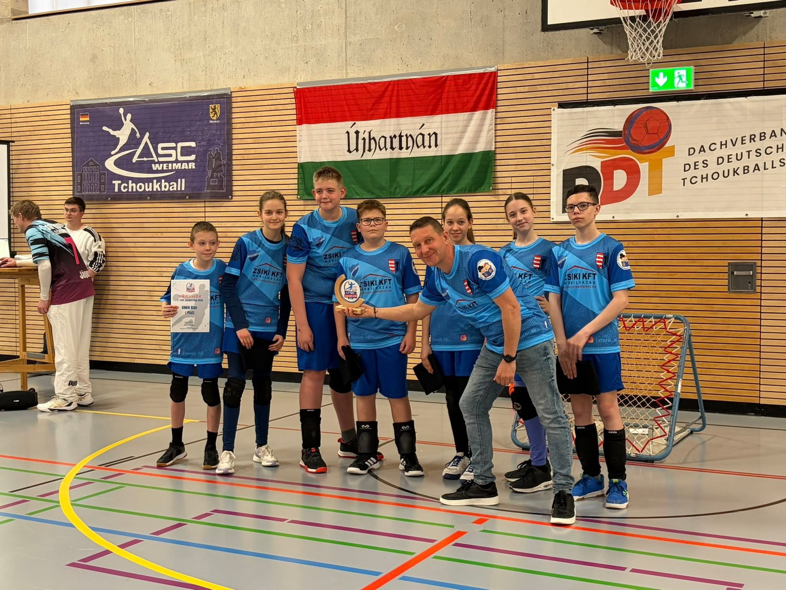
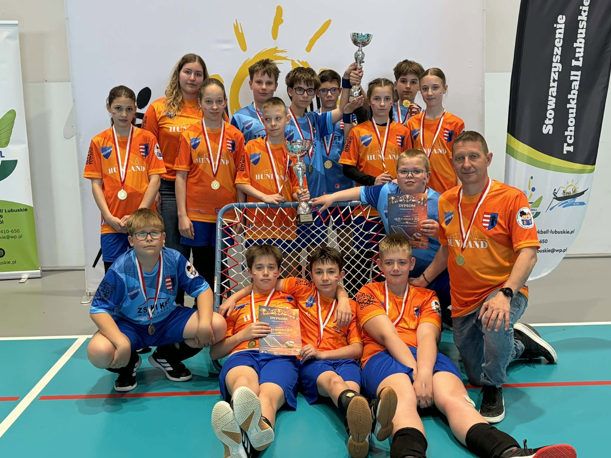
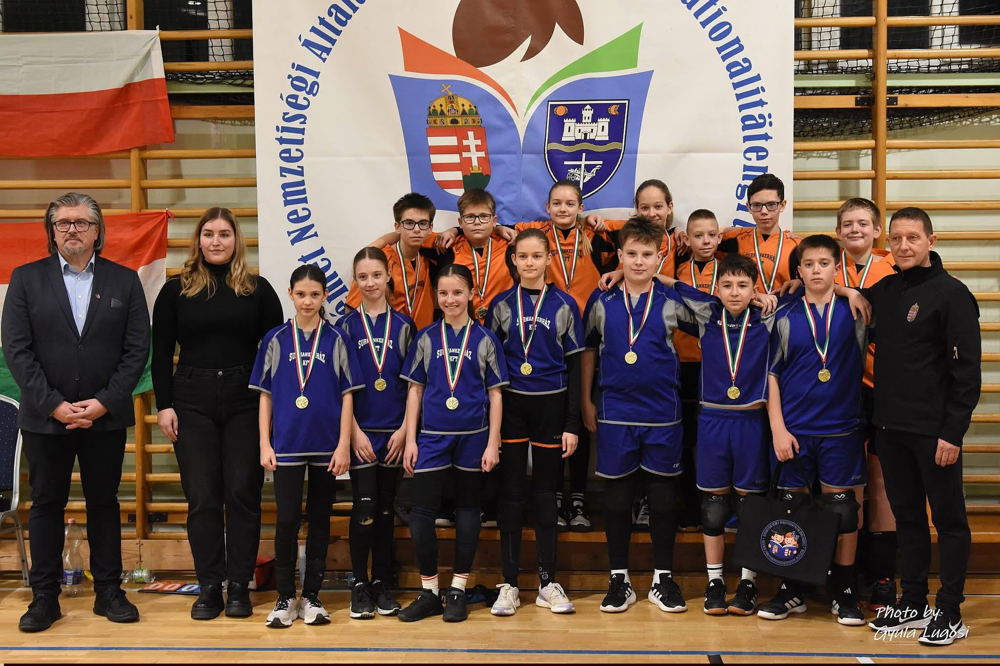
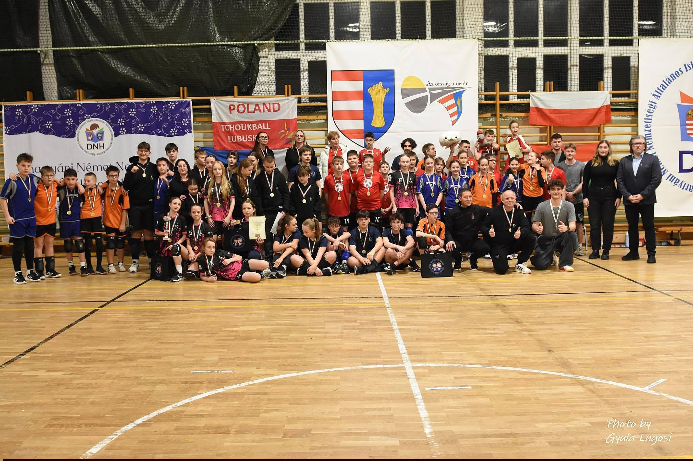
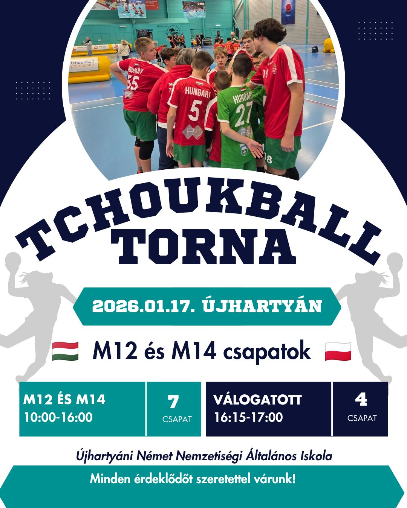

HÍREK
Mi fán terem a Tchoukball?
A MI TÖRTÉNETÜNK
A FAVORIT SE történetében 2025. április 12. a legfontosabb mérföldkő: egy évvel ezelőtt elutaztunk Lengyelországba, és megnyertük első tchoukball tornánkat. Nyolc rendkívül erős csapatot előztünk meg veretlenül, és innen indult el az a nagyszerű álom, amelyet remélünk, hogy még hosszú évekig sikerül folytatnunk.
2025.04.12. Lengyelország, Nowa Sól Tchouk High Five M12 – 1. hely
2025.04.30. Mende, Tchoukball Fesztivál – 1. hely
2025.06.13. Dabas, Mozgás éjszakája Tchoukball Torna – 1. hely
2025.06.20. Csehország, Jicin Czech Beach Open – 1. hely
2025.06.21. Csehország, Jicin Beach Open M13 – 1. hely
2025.09.27. Dabas Tchoukball Fesztivál M12 – 1. hely
2025.10.18. Újhartyán, UNNAI Tchoukball Torna – 1. hely
2025.11.08. Seregélyes, Hungary Open Nemzetközi Torna – 1. hely
2025.11.21. Lengyelország, Nowe Miasteczko Torna M12 – 1. hely
2026.01.17. Újhartyán, Nemzetközi Tchoukball Torna M12 – 1. hely
2026.02.20. IV. Mendei Tchoukball Fesztivál M12 – 1. hely
2026.03.21. Németország, Erfurt 1. TTBV Juniors Cup – 1. hely
2026.04.11. Lengyelország, Nowa Sól Tchouk High Five M13 – 1. hely
Egy versenyt nem nyertünk meg, a Rimini Beach Tchoukball tornát 2025-ben, Olaszországban, ahol két csapatunk vett részt. Itt két-három évvel idősebb gyerekekkel játszottak, de így is fantasztikus teljesítményt nyújtottak.
Idén májusban ismét részt veszünk Európa legnagyobb Beach Tchoukball Fesztiválján. Az idei évben már három csapatunk számára a legfontosabb cél a játék szeretetének ápolása, a sportszerűség, és a tchoukball népszerűsítése lesz. Emellett szeretnénk új barátokat szerezni és élvezni a tengerparti élményeket.
A május 8-10. között zajló versenyre ideális körülmények között készülhetünk fel. Az Újhartyáni Német Nemzetiségi Általános Iskola jóvoltából a tornateremben gyakorolhatunk, a saját, világítással ellátott füves pályánkat is használhatjuk, és holnap felavathatjuk új homokos edzőpályánkat.
Mindezt nem tudtuk volna megvalósítani támogatóink nélkül. Köszönjük szépen a partnereinknek, az együttműködő vállalatoknak, magánszemélyeknek, szülőknek és Újhartyán Város Önkormányzatának a segítséget!
FAVORIT SE
Tóth Attila


Mi fán terem a Tchoukball?
A tchoukball egy gyors és változatos csapatjáték, melyet általában teremben játszanak, de homokban és füvön is egyaránt játszható. A pálya két végén egy-egy „panel” található, 1 m-es négyzet alakú, amiről visszapattan a labda. A panelek előtt a pálya mindkét végén egy 3 m sugarú félkör található, a „zárt zóna”. A csapatoknak nincs saját panelük, a pálya mindkét oldalán támadhatnak és védekezhetnek. A pontszerzés úgy történik, hogy a támadó csapat rádobja a labdát a panelra, ügyelve arra, hogy a visszapattanó labda a „zárt zónán” kívülre érkezzen és a védekező csapat ne tudja elkapni.
A játékot 50 évvel ezelőtt svájci tudósok fejlesztették ki, speciálisan a gyerekek fejlesztése volt a cél. Akkor nem is gondolhatták, hogy a XXI. század gyermekeinek mekkora szüksége lesz a mozgáskoordináció és a kognitív képességek fejlesztésére. Fő ismérve, hogy a tchoukball erőszakmentes, tehát a test-test elleni játék, a feltartóztatás és az akadályozás nem megengedett, így nincs sérülésveszély. A játék mozgatója az ügyesség és a gyors gondolkodás, hiszen éberséget és odafigyelést követel a játékosoktól. Előrelátást és logikát tanít, emellett felhívja a figyelmet a játékosok iránti tisztelet fontosságára, miközben fokozza az egyén önbecsülését is. Támogatja a csapatmunkát és segíti a bizalomépítést.
Újhartyánon Tóth Attila vezetésével hat hónapja zajlanak tchoukball edzések. Az újhartyáni M12-es csapat rövid időn belül nagy fejlődésen ment keresztül és a korosztályának meghatározó csapatává fejlődött, amit mi sem bizonyít jobban, hogy 4 lány és 4 fiú válogatott játékossal büszkélkedhet. Az edzések rendkívül jó hangulatban telnek, náluk nincsenek unalmas, monoton feladatok, gyakorlások, csupán a játékon keresztül fejlődnek a gyerekek.
A csapat fő célja az első edzés óta, hogy nemzetközi szintre jussanak. Májusban ez az álmuk valóra fog válni, felejthetetlen élményben lesz részük, hiszen Európa legnagyobb Tchoukball tornájára utaznak. Olaszországba, Riminibe viszik Újhartyán hírét, ott mérettetik meg magukat a világ legjobbjaival. Körülbelül 1200 játékossal együtt fognak játszani a tengerparton. Edzőjük szerint a gyerekek az ügyességük és szorgalmuk alapján méltán megérdemlik a nemzetközi lehetőséget.
2025. január 18-án, Újhartyánon került megrendezésre az 1. UNNAI M12 Tchoukball fesztivál, ahol Dunakeszi, Mende, Dabas és Újhartyán csapatai versenyeztek egymással. A szurkolók hangja az általános iskola tornatermében csendült fel. A meccsek jó hangulatban teltek, mindenki a tudása legjavát nyújtotta. A csapat nevében köszönetünket fejezzük ki a fesztiválon nyújtott sok segítségért a szülőknek és játékvezetőknek, Surman Viktor, városi sportmenedzsernek, az Újhartyáni Német Nemzetiségi Általános Iskolának, Bambuk László, igazgató úrnak és Kunos Anitának, a Tchoukball Hungary elnökének!
A csapat a jövőben örömmel fogadja szponzorok, támogatók megkeresését.
Fajt Petra
Forrás:
https://tchoukball.hu/


🏐✨ III. UNNAI Nemzetközi Tchoukball Torna Újhartyánban – élményekkel és izgalmakkal✨🏐
Szombaton Újhartyánban igazi tchoukball-ünnep zajlott! Egész nap pörgős mérkőzések, hatalmas küzdelmek, mosolyok, drukkolás és fantasztikus hangulat töltötte meg a termet. Külön öröm számunkra, hogy a bajnokság nemzetközi színtéren zajlott, hiszen Lengyelországból is köszönthettünk csapatokat. 🇭🇺🤝🇵🇱
A pályán elszántság és küzdeni akarás, a nézők között lelkes szurkolás és baráti légkör – minden adott volt egy felejthetetlen naphoz. A fiatal sportolók ismét bebizonyították, hogy a tchoukball nemcsak egy sport, hanem közösség, élmény és összetartozás. 💙
🔥 Eredmények:
🔵 M14-es korosztály:
🥇 Üstökösök
🥈 Dabasi Rozmárok
🥉 Lubuskie
🟢 M12-es korosztály:
🥇 Unnai Orange
🥈 Unnai Blue
🥉 Lubuskie
🏅 Dabasi Fókák
A bajnokság nemcsak az eredményekről szólt, hanem a közösségépítésről, a nemzetközi kapcsolatok erősítéséről és a tchoukball iránti közös szenvedély ünnepléséről is.
Köszönjük minden játékosnak, edzőnek, szervezőnek, szülőnek és szurkolónak, hogy együtt részesei lehettünk ennek a különleges napnak! 🙌🏐



2025.április.12 Nowa Sól, Lengyelország
Tchoukball csapatunk mind a 8 meccsét fölényesen nyerte meg egy kiemelt európai M12-es tornán. Nem volt kérdéses, hogy április 12-én ők voltak a legjobbak. A nemzetközi torna Lengyelországban került megrendezésre.